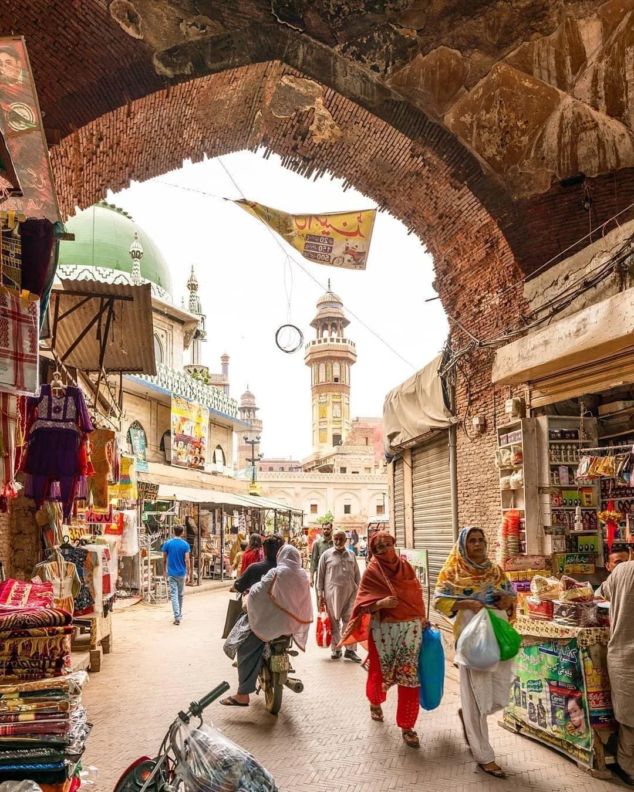
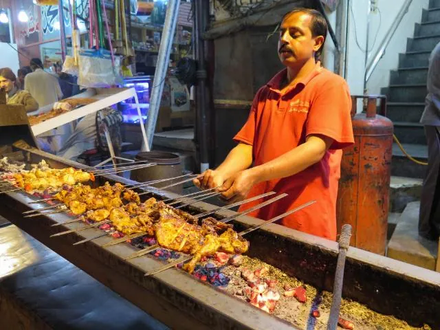

Planning your first trip to Lahore? This guide gathers the practical essentials in one place: when to go, how to get around, money, dress and etiquette, food, safety, emergency numbers and a few words of Urdu, plus a short history so the monuments make sense when you see them.
Why visit Lahore
Lahore is often called the cultural heart of Pakistan. In one city you can walk through Mughal palaces and mosques, Sikh and colonial-era landmarks, centuries-old bazaars and busy modern neighbourhoods. The old Walled City is the best-known quarter, with the Lahore Fort and Badshahi Mosque on its northern edge.
Top sights for a first visit
- Lahore Fort (Shahi Qila) – a UNESCO World Heritage Site with Mughal halls, the Sheesh Mahal and the Picture Wall.
- Badshahi Mosque – completed in 1673 under Emperor Aurangzeb, with one of the largest mosque courtyards in the world.
- Wazir Khan Mosque – famous for its colourful painted and tiled decoration. See our Wazir Khan and Shahi Hammam guide.
- Delhi Gate and the Shahi Hammam – the historic entrance to the Walled City and its restored royal bathhouse.
- Shalimar Gardens – terraced Mughal gardens laid out in 1641–42. Read our Shalimar Gardens guide.
- Lahore Museum – art and archaeology from Punjab and wider South Asia, including Gandhara sculpture.
- Minar-e-Pakistan in Greater Iqbal Park – the monument marking the 1940 Lahore Resolution.
- Wagah Border – the daily flag-lowering ceremony on the Pakistan–India border, roughly 45 minutes' drive from the city depending on traffic.
Best time to visit
The most comfortable months are usually November to March, when days are mild and good for walking. February–March and November are particularly pleasant.
| Season | What to expect |
|---|---|
| Nov – Mar | Mild, sunny days (roughly 20–26°C at midday); cool evenings, and foggy mornings in December–January. Best for sightseeing. |
| Apr – Jun | Hot to very hot, with May and June often reaching the high 30s °C or more. Plan early mornings and late afternoons. |
| Jul – Sep | Monsoon season: humid, with heavy downpours, especially in July and August. Streets can flood after storms. |
| October | Heat easing; a good shoulder month as the weather cools. |
For trips that combine Lahore with the mountains, see our month-by-month guide to northern Pakistan.
Getting there and getting around
- By air: Allama Iqbal International Airport serves Lahore, northwest of the main city districts.
- By train: Lahore Junction station links the city with Islamabad/Rawalpindi, Karachi, Peshawar and other cities. Check current timetables before you travel.
- By road: intercity coaches and motorways connect Lahore with Islamabad and the rest of Punjab.
- In the city: the Lahore Metrobus, the Orange Line metro train, local buses and app-based ride-hailing are all available. For taxis and rickshaws, agree the fare before you set off, or use a booked or app-based service.
- On foot: the Walled City is best explored walking, but lanes are narrow, busy and uneven, so wear comfortable shoes.
- Allow extra time: traffic is heavy, and journeys often take longer than maps suggest.
Money and payments
- The currency is the Pakistani rupee (PKR, ₨).
- Cards are accepted at most larger hotels, malls and established restaurants, but bazaars, street food, small shops and local transport are mostly cash.
- Carry small notes for snacks, tips and rickshaws, and tell your bank you'll be using your card in Pakistan.
- Tipping isn't compulsory but is appreciated for good service.
Dress and etiquette
- Dress modestly, especially at mosques, shrines and gurdwaras: shoulders and knees covered.
- Women should carry a scarf to cover their hair at religious sites. Everyone removes shoes before entering prayer areas, so slip-on shoes and socks are practical.
- Ask before photographing people, particularly worshippers and women.
- Don't photograph checkpoints, security installations or military sites.
- Public drinking of alcohol isn't part of local life and is restricted by law.
What to eat in Lahore
Lahore is famous across Pakistan for its food. Dishes to try include slow-cooked nihari and paya, seekh kebabs, whole spiced chicken chargha, halwa puri for breakfast, flaky parathas and a cold glass of lassi.
Choose busy, well-established places with a high turnover of food, and drink sealed bottled or properly treated water. Our Lahore food guide has more on where and what to eat.
Staying safe and healthy
- Check your own government's current travel advice before you book and again before you travel.
- Keep valuables secure in crowded bazaars, and use pre-arranged or app-based transport after dark.
- Summer heat and winter smog can be hard going. Drink plenty of water, plan breaks, and check air quality if you have breathing conditions.
- A local guide can plan routes and timings around crowds, prayer times and traffic.
Emergency numbers
| Service | Number |
|---|---|
| Rescue 1122 (ambulance, rescue and fire, Punjab) | 1122 |
| Police | 15 |
| Fire brigade | 16 |
Save these in your phone before you arrive, and confirm them with your hotel.
Useful Urdu phrases
| Phrase | Meaning |
|---|---|
| Assalam-o-Alaikum | Hello (peace be upon you) |
| Walaikum Assalam | The reply to a greeting |
| Shukriya | Thank you |
| Maaf kijiye | Excuse me / sorry |
| Kitne ka hai? | How much is it? |
| Khuda Hafiz | Goodbye |
Most people in Lahore speak Punjabi and Urdu, and English is widely understood in hotels, shops and among younger people.
A short history of Lahore
| When | What happened |
|---|---|
| 11th century | Lahore becomes a major centre under the Ghaznavids. |
| Late 1500s | Emperor Akbar strengthens the city and rebuilds the fort. |
| 1641–42 | Shalimar Gardens laid out under Shah Jahan. |
| 1673 | Badshahi Mosque completed under Aurangzeb. |
| 1799 | Lahore becomes the capital of Maharaja Ranjit Singh's Sikh Empire. |
| 1849 | The British annex Punjab. |
| 1940 | The Lahore Resolution is adopted, later marked by Minar-e-Pakistan. |
| 1947 | Lahore becomes part of the newly created Pakistan. |
See Lahore with a local guide
Our Lahore heritage tours link the Fort, Badshahi Mosque and the Walled City in one day, at your pace. We confirm the price and inclusions in writing before you pay.
Prices, transport, opening times and travel advice can change. Confirm current details locally before you travel.